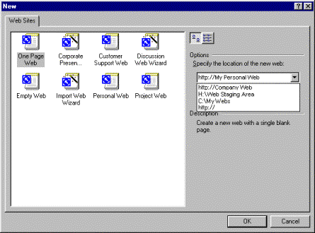
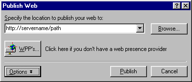
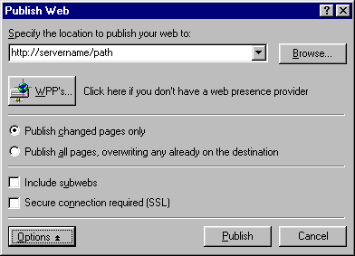
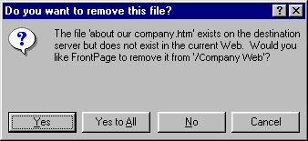
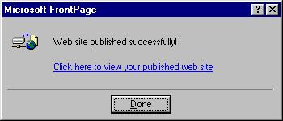

Microsoft Corporation
March 30, 1999
Introduction
This article defines what it means to publish with the
FrontPage® 2000 Web site creation and management tool and discusses your
choices of where to create and host your site. The article gives you step-by-step
instructions on how to publish with FrontPage 2000 and highlights the
differences in publishing with FrontPage 98 and FrontPage 2000. If you're new
to FrontPage 2000 or you've been publishing using FrontPage 98, you'll find
answers to many of your questions about publishing here.
What does it mean to publish a Web site using Microsoft FrontPage?
First of all, it's important to understand what a Web site is. A
"Web" is a group of files that are interconnected by hyperlinks that allow you
to jump from one page to another, usually by simply clicking your mouse. While
it's possible for a Web site to be a single HTML page, a Web site usually comprises
several pages that can include images, hyperlinks, and more advanced technology
like forms and databases.
Publishing a Web site generally means copying all of the files
that make up a Web site to a particular destination. In FrontPage, you would
typically publish your site when you want to:
- Make your site (or new or updated pages on
your site) available for public viewing. Normally you create or update
pages for your Web site in a location (often referred to as a "staging" area)
where others cannot find or view the pages with their Web browser. When you are
ready to let others view your Web site on the World Wide Web or on your company
intranet, you would use the FrontPage publishing feature to copy the files to
the Web server.
- Make a backup of your site. There may
be times when you want to make a copy or a backup of your Web site and save it
to a particular location on a your computer or on a network drive. The
publishing feature in FrontPage is a convenient way to make a backup.
Publishing to a Web server, whether it is on the World Wide
Web or on your company network (intranet), provides some important benefits:
- Ensures that others cannot modify your
pages unless they have authoring privileges. You may have noticed that you
can open an HTML file (normally with the extension .htm or .html) in your
browser and use the "View Source" command to see the underlying code and text.
When you do this with HTML files that you access through your file system, you
can modify and save changes to the file. However, if you view the source of a
file that is published to a Web server (the file displays an http:// prefix in
your browser address line), it seems like you can change the source, but you
cannot actually save your changes.
- Keeps your links and images working
correctly. FrontPage will maintain your files and hyperlinks. Each time you
publish the Web site, FrontPage compares the files on your local computer to the
files on the Web server. For example, if you move a file in your local Web site,
FrontPage will update and correct any hyperlinks to it, and then make the same
corrections to the files on the Web server the next time you publish the Web.
- Enables server-dependent features. Certain
features such as forms, searches, databases, and discussion groups require a
Web server in order to work. If you add these types of features to your Web,
you'll find that they simply don't work when viewing your pages directly from a
file location on your hard-drive or a network file location. But when you
publish to a location with a Web server, these server-dependent features will
work because they have the server software to add the "smarts."
Note FrontPage
includes server components, called FrontPage Server Extensions that are
required to enable certain features. See the section of this article "How do FrontPage Server Extensions Affect Publishing"
for details.
The Fundamentals of Publishing with FrontPage
When you first create
a Web site in FrontPage 98 or FrontPage 2000, you have the option of saving your Web
to several different places.

Figure 1. FrontPage 2000 New dialog box
You have the option of creating your Web site on a hard drive,
network drive, or Web server; the latter allows others locate and view it
through their Web browser.
You can publish or save your Web:
- To your hard drive or a network drive. Simply type in the path. Keep in mind that others who use your computer or are on your
network can view, open, and change these files through the file system (using
Windows®
Explorer or My Computer in the Windows 95 or later operating system). However,
when you save your Web site this way, others cannot browse to the site over an intranet
or over the World Wide Web until you publish it.
Note It is recommended that you always create
disk-based Web sites in a subdirectory on your hard drive, not at the root (for
example, in c:\my Webs\ rather than c:\). That way, if you ever need to delete
the Web, you delete a file folder instead of having to select files from the
root directory.
- To your Personal Web Server. This is
accomplished by adding a sub-Web. For example, if the name of your personal
computer is "Alexi" you could create a Web site to http://Alexi/My
Personal Web. Keep in mind that when you choose to create a Web site on your
Personal Web Server, other people will be able to see your work in progress if
you have given them the address (the uniform resource locator or URL) of your
Personal Web Server. For this reason, you might want to create your Web site on your
hard drive or a network drive and then using the publish feature when you're
ready for others to see it.
Note Personal
Web Servers allow you to create Web sites and test Web functionality on your own
computer, such as a system running the Windows 95 or Windows 98 operating
system. Microsoft Personal Web Server ships with Windows 95 and Windows 98, or
is available for download in the Windows NT® Option Pack at
http://www.microsoft.com/windows/downloads/contents/Updates/NT4OptPk/default.asp.
- To your company intranet server. An
intranet is a Web site or series of Web sites that are available only within a particular
networked environment. For example, in a company, various departments may
create their own Web pages and then publish these pages to a computer that is
running Web-server software. Other people on the network can view the pages by
typing in a path such as http://CompanyWeb/.
(Notice that the address or URL of an intranet doesn't have the "www" prefix.
Rather, it starts with http://, which means that users can view but not change
the files via their browser.)
- To a World Wide Web server. The World
Wide Web is made up of an enormous network of servers located all over the
world, all accessible using a Web browser. You recognize World Wide Web sites
by the http://www.sitename.extension
address. A Web server that "hosts" sites that are viewable on the World
Wide Web may exist within your own company, or frequently companies contract
with a Web hosting provider or Web presence provider to host their site. In
this case, the server is located at the provider's location. When you publish
your site to a hosting service, you copy your site's files over the Internet to
their Web server.
The table below summarizes the effects of publishing to
these different locations.
Table 1. Microsoft FrontPage 2000 -- Publishing Locations
versus Features Enabled
| When you publish...
|
Others can edit your pages
|
Links and images work
|
Special features enabled*
|
| To your hard disk or to a network location
|
X
|
X
|
You can add the features, but they won't be enabled
until published
|
| To your Personal Web Server
|
If they have permission
|
X
|
X
|
| To your company intranet Web server
|
If they have permission
|
X
|
X
|
| To a World Wide Web server
|
If they have permission
|
X
|
X
|
* Some features require a server with FrontPage Server
Extensions installed. See the section "How do FrontPage
Server Extensions affect publishing?" for details.
Using Publishing to Move a Web Site from Staging to Production
As mentioned previously, the area where you create and work
on your site, where others cannot view it, is often called a "staging" area.
Once you have tested your site and are ready for others to view it on your
intranet or the World Wide Web, you use the FrontPage publishing feature and
direct FrontPage where to publish your site.
If you are publishing to an intranet, you would enter in
FrontPage the path to a location on your company network that has been set up
by your intranet Webmaster as the intranet Web server, such as \\server\share\path or http://CompanyWeb/. FrontPage then copies your
site's files to that path.
If you are publishing to the World Wide Web, you would enter
the address of the destination Web host, which could be a server on your
network if you host your own site, or a server at your Internet Service Provider
(ISP) or Web presence provider (WPP). See below for step-by-step instructions.
Using Publishing to Create a Backup of Your Entire Web Site
The other use of the publishing feature in FrontPage is to
make a copy or a backup of your site. To do this, you open the Publish Web
dialog box (from the File menu,
select Publish Web). In the "Specify
the location to publish your Web to" drop-down box, you enter the path of a
directory on your hard disk or on a network drive. FrontPage then copies the
files to that location, maintaining all of the proper links.
How Do I Publish Using FrontPage 2000?
Step-by-step
instructions
Before publishing, it is a good idea to check to make sure
that your site is complete and thoroughly tested and that you've reviewed your
task list.
To publish in FrontPage 2000
- From the File menu select Publish Web. The following dialog box appears.

- Specify the location for publishing your Web by typing the path or clicking the Browse button and then selecting the location.
Here are examples of locations to which you can publish:
- Hard drive:
C:\directory\
- Network
drive: \\server\share\path\
- An intranet
Web server or Personal Web Server: http://servername/path/
- Web presence
provider (WPP) or Internet service provider (ISP): http://www.wppname.com/~folder/ or ftp.wppname.com/~folder/
Note There are two methods
of publishing to your Web hosting service, but both work the same way. If the
Web hosting service has FrontPage Server Extensions installed on their server,
you just enter the address (or URL of your Web site), as you would when viewing
it in your browser. If FrontPage Server Extensions are not installed on the
server, you can use FTP (file transfer protocol) to copy the files to the
server.
To enter an FTP
server location in the Publish Web dialog box:
Simply type the FTP server location (ftp://ftp.server.com/~folder) in the Publish Web dialog. (Be sure to
type ftp:// before the server name).
A dialog box will prompt you for your username and password.
To specify (or change) a saved FTP location:
- In the Publish Web dialog box, click the Browse button.
- In the top portion of the Open Web dialog box that
appears, expand the list of locations next to "Look in." At the bottom of the list, you will see a
location called FTP Locations.
- Click Add/Modify
FTP Locations and specify the path to your FTP location (ftp.server.com/~folder).
- Select "Anonymous" if there is no user name or password
required, or "User" to enter the appropriate user name and password.
- Click OK to
save. This new FTP location is now available to choose from the FTP Locations
menu.
- Specify your
publish options by clicking the Options
button. The Publish Web dialog box expands, displaying four options.

- Publish changed pages only. FrontPage
compares the files on your local Web to the files on the destination hard drive
or Web server, and only those files that are newer than those on the
destination hard drive or Web server are published. However, files that have
been marked Don't Publish will not be published.
Note To mark specific pages as Don't Publish, on
the View menu, point to Reports and then
click Publish Status. If you don't want to publish a certain
page, click that item's entry in the Publish column and change it to Don't
Publish.
- Publish all pages, overwriting any already
on the destination. The files from the local Web site will overwrite all files
on the destination Web server, even if the files on the Web server are newer.
This publishing feature should be used judiciously because once files are
overwritten, you won't be able to get the previous versions back.
- Include sub-Web sites. If the current Web
has sub-Web sites, all files and folders in sub-Web sites will be published in addition
to those in the current Web.
- Secure connection required (SSL). You
can use this feature to encrypt the information transmitted so that no one can
read it. Your destination Web server must support HTTPS authentication for this
feature to work. This provides an added level of security that can be useful
when you are publishing sensitive information to a provider outside your
company.
- Click Publish, and then you will see a progress
bar that shows you that publishing is under way.
FrontPage also includes a feature that synchronizes
the files on your source with those on your publishing destination. If
FrontPage finds a page on the publishing destination that does not exist in
your source files, it will ask you if you wish to remove that file, as shown in
this dialog box.

This feature helps you to get rid of unused files that would
otherwise clutter your Web site and use up disk space unnecessarily.
To verify that your Web was successfully published, click
the hyperlink that is displayed after the Web has been published, and your Web
browser will open to the site you just published.

Note If you
cancel publishing in the middle of the operation, files that have already been
published remain on the destination Web server.
Tip To publish only pages that have
changed to the same location you previously published to, click the Publish
button  , located
on the FrontPage toolbar. If you haven't previously published this Web site before,
pressing this button will bring up the same Publish dialog box that's also
available from the File menu, under Publish Web.
, located
on the FrontPage toolbar. If you haven't previously published this Web site before,
pressing this button will bring up the same Publish dialog box that's also
available from the File menu, under Publish Web.
How Do FrontPage Server Extensions Affect Publishing?
The FrontPage Server Extensions are a set of programs that
you or your Web hosting service can install on a Web server to support
administering, authoring, and browsing a FrontPage Web. While it is not
essential that you host FrontPage-based Web sites on a server that has the FrontPage
Server Extensions installed, some FrontPage features are enabled by the Server
Extensions, including:
- Hit
counter -- keeps track of the number of hits (visitors) to the page it resides on
- Form
handler -- sends form results to a text file, e-mail address, or database
- Discussion
form -- allows users to send comments to the page, and displays all comments
- Search
form -- allows users to search for items on the Web
- Multi-user
authoring -- allows multiple users to edit and author the same Web site at the same
time
- Remote
authoring and administration -- allows users with authoring rights to edit and
author directly on the Web, and allows users with administrative rights to
perform user and site management from a remote computer
If you include any of these features in your FrontPage Web,
you need to publish to a server that has FrontPage Server Extensions installed;
otherwise, the features will not work.
What's New and Different Between Publishing in FrontPage 98 and FrontPage
2000?
If you are familiar with publishing in FrontPage 98, you
will be interested in these enhancements, which are new in FrontPage 2000.
Selective publishing. In FrontPage 98,
you could choose to publish your entire site, or just those pages that have
changed. FrontPage 2000 improves upon this by allowing you to mark specific
pages as Don't Publish so you can
selectively exclude certain files from publishing. This is especially useful
for pages that are still under construction or contain sensitive information
that is not yet ready to be released.
Display publishing status. In FrontPage
98, there was no indicator to let you know the status of the publishing
process. FrontPage 2000 provides a visual display indicating that publishing is
taking place.
Synchronize files via FTP. In FrontPage
98, if you published a site and the publish destination directory had extra
files that did not exist in your source directory, FrontPage only asked if you
wanted to delete these files if you were publishing to a server via FrontPage
Server Extensions. Now in FrontPage 2000, this "synchronize" feature works if
you are publishing your site via FTP as well.